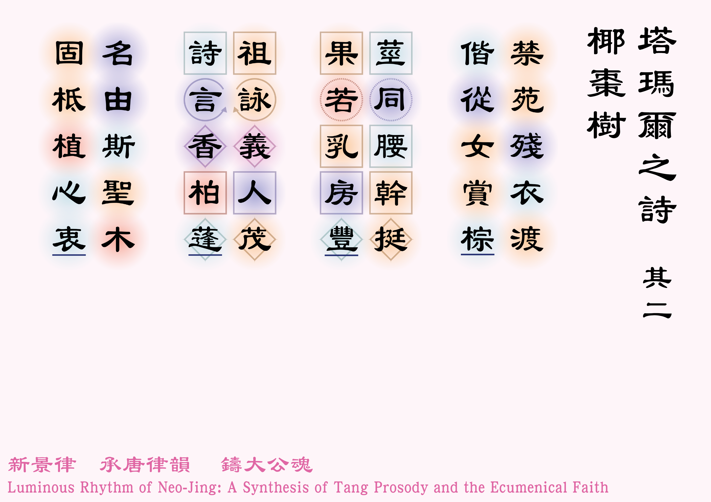

![[如果未顯示圖片，請確認 圖例_2-01.jpg 已放入同資料夾]](圖例_2-01.png)

禁苑殘衣渡 [1]殘衣：塔瑪爾被阿默農強姦、驅逐後，撕破了自己的彩色長衣離開。見〈撒慕爾紀下13:19〉。，偕從女賞棕 [2]* 從女：姪女，指阿貝沙隆的女兒（小）塔瑪爾，見〈撒慕爾紀下14:27〉。
** 棕：椰棗樹又名海棕。「塔瑪爾」在希伯來文中為「椰棗樹」，見 https://www.fao.org/4/y4360e/y4360e06.htm 。
莖同腰幹挺，果若乳房豐 [3]* 典出〈雅歌7:8〉，原文本為「你的身材修長如同棕櫚樹，你的乳房猶如棕櫚樹上的兩串果實。」；
** 莖：粵音京，主榦。。
祖詠義人茂，詩言香柏蓬 [4]* 典出〈聖詠集92:13-14〉，原文為「正義的人像棕櫚茂盛，似黎巴嫩的香柏高聳。他們被栽植在上主的殿中，在我們天主的庭院裏繁榮。」；
** 祖：祖父，即達味，達味為小塔瑪爾之祖父。。
名由斯聖木，固柢植心衷 [5]* 柢：粵音底，根。
** 衷：內心。。
體裁：五言律詩（仄起首句不入韻式）
韻部：平水韻．一東
創作日期：二零二六年六月二十四日
| Poetic Verse (Rhymed & Metrical) | Close Literal Translation | |
|---|---|---|
| 1 | Through palace walls in tattered robes I paced, Then with my niece, the royal palms we faced. |
Passing through the forbidden gardens in my tattered robes, Together with my niece, I admire the palm trees. |
| 2[6]Adapted from Song of Songs, 7:8, “Like a palm tree, you are stately and like its clusters are your breasts.” | Their trunks stand high and straight like slender waists, Their fruit is rich and sweet, like milk to taste. |
Their stems are upright, just like a straight torso, Their fruits are abundant, like fertile breasts. |
| 3[7]Psalms, 92:12 | Her Grandfather sang of righteous trees that grow, The Psalmist praised the cedar's fertile blow. |
Her Grandfather sang of the flourishing of the righteous, The Psalms spoke of the thriving of the cedars. |
| 4 | Named for this holy wood, our lives shall start; Deep may our roots be anchored in the heart. |
Our name is derived from this sacred tree; May its deep roots be firmly planted within our hearts. |
While reading the narrative of Absalom's lineage, I noticed that he had a daughter who was also named Tamar. It made me wonder: after her father's rebellion and tragic death, how did this little girl—sharing the exact same name as her aunt—navigate life alongside her aunt, a sexual assault survivor who lived a solitary existence within the confines of the royal court?
***English version is translated by Google AI.